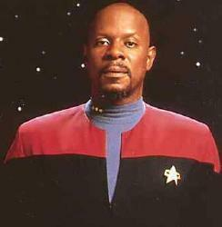

Benjamin Lafayette Sisko |
|
|
|  |
Dati Personali
Nato sulla Terra nel
2332.
Genitori: Joseph e Sarah Sisko. La madre lo abbandonò all'età di un anno
lasciandogli un ciondolo, su cui è inciso in bajoriano antico «Cristallo
dell'Emissario». La madre morì poco tempo dopo (Images
in the Sand).
Una sorella, Polly (Past Tense - Part I).
Entrato in Accademia nel
2350.
Sposato con Jennifer (deceduta nel 2366) da cui ha un figlio, Jake. Sposato con
Kasidy Danielle Yates nel 2375
('Til Death Do Us Part).
Uomo dal temperamento forte, preferisce l'azione alle parole, ma durante l'ultimo periodo della sua vita è maturato ed ha imparato a fermarsi a pensare a lungo prima di perdere il controllo e agire d'impulso. Ha un debole per il gioco del baseball (sport finito nel XXII secolo) e per questo ogni tanto si ritira in una delle camere olografiche per chiacchierare con i suoi campioni sportivi preferiti. Sisko era a bordo della Saratoga con la moglie e il figlio quando i Borg hanno attaccato la Federazione a Wolf 359, la battaglia in cui ha perso la moglie. Per questo non ha mai perdonato Locutus/Picard con il quale ha un rapporto amaro e freddo. Dopo la tragica battaglia è stato assegnato ai cantieri di Utopia Planitia per aiutare la ricostruzione della Flotta Stellare ed è stato poi assegnato a Deep Space Nine. Sisko non voleva questo incarico, perché aveva richiesto alla Flotta di essere assegnato sulla Terra per poter meglio crescere suo figlio.
Onorificenze
2374 Medaglia al valore
Christopher Pike (Tears of the Prophets).
Assegnamenti
| USS Saratoga | Tenente Comandante. | |
| USS Okinawa | Ufficiale Esecutivo. | |
| Utopia Planitia | ||
| 2369 | Deep Space Nine | Commander, Ufficiale Comandante. |
| 2371 | Deep Space Nine | Capitano, Ufficiale Comandante (The Adversary). |
| 2375 | Disperso all'interno del wormhole nei pressi di Bajor. |